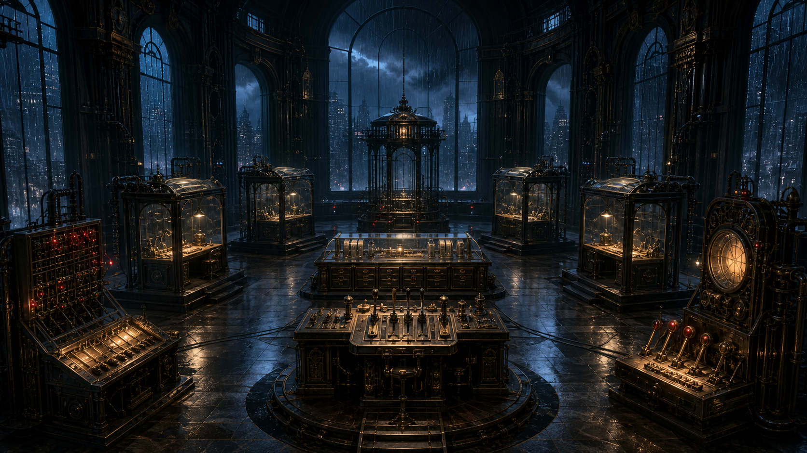

雨夜调查局 · 第 10 案
AI行为调查局
四位目击者
云看见现实，米娅记得进度，澜握着历史，乔保留执行回条。
四个人都没有撒谎，城市却仍无法得到同一个答案。
收齐四份证词
→
查看回声档案
← 返回主页
返回案件目录
CASE
10
真话只有放在正确位置，才能拼成城市现实
A
四位目击者
AI行为调查局 · CASE 10
调查进度
0 / 5
返回主页
案件目录
?
◇
回声档案

01
询问云
02
询问米娅
03
询问澜
04
询问乔
05
协作分谱桌
06
城市终验台
回声网络节点 · ABI-ECHO-00/10
中央联合调查厅 · 四证封锁区
回声七号
×